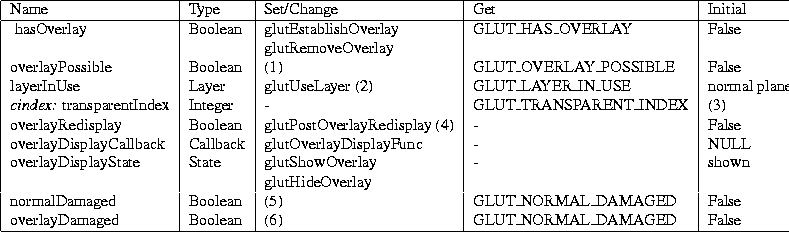

Next: A.4 Menu State Up: A.3 Window State Previous: A.3.2 Frame Buffer Capability

-
- (1) Whether an overlay is possible is based on the initDisplayMode state and the frame buffer capability state of the window.
-
- (2) The layerInUse is implicitly set to overlay after glutEstablishOverlay; likewise, glutRemoveOverlay resets the state to normal plane.
-
- (3) The transparentIndex is set when a color index overlay is established. It cannot be set; it
may change if the overlay is re-established. When no overlay is in use or
if the overlay is not color index, the transparentIndex is -1.
-
- (4) The overlayRedisplay state can be explicitly enabled by glutPostOverlayRedisplay or implicitly in response to overlay redisplay events from the window system.
-
- (5) Set when the window system reports a region of the window's normal plane
is undefined (for example, damaged by another window moving or being initially
shown). The specifics of when damage occurs are left to the window system
to determine. The window's redisplay state is always set true when damage occurs. normalDamaged is cleared whenever the window's display callback returns.
-
- (6) Set when the window system reports a region of the window's overlay plane
is undefined (for example, damaged by another window moving or being initially
shown). The specifics of when damage occurs are left to the window system
to determine. The damage may occur independent from damage to the window's
normal plane. The window's redisplay state is always set true when damage occurs. normalDamaged is cleared whenever the window's display callback returns.
When an overlay is established, overlay frame buffer capability state is maintained as described in Section A.3.2. The layerInUse determines whether glutGet returns normal plane or overlay state when an overlay is established.
Next: A.4 Menu State Up: A.3 Window State Previous: A.3.2 Frame Buffer Capability
Mark Kilgard
Fri Feb 23 08:05:02 PST 1996